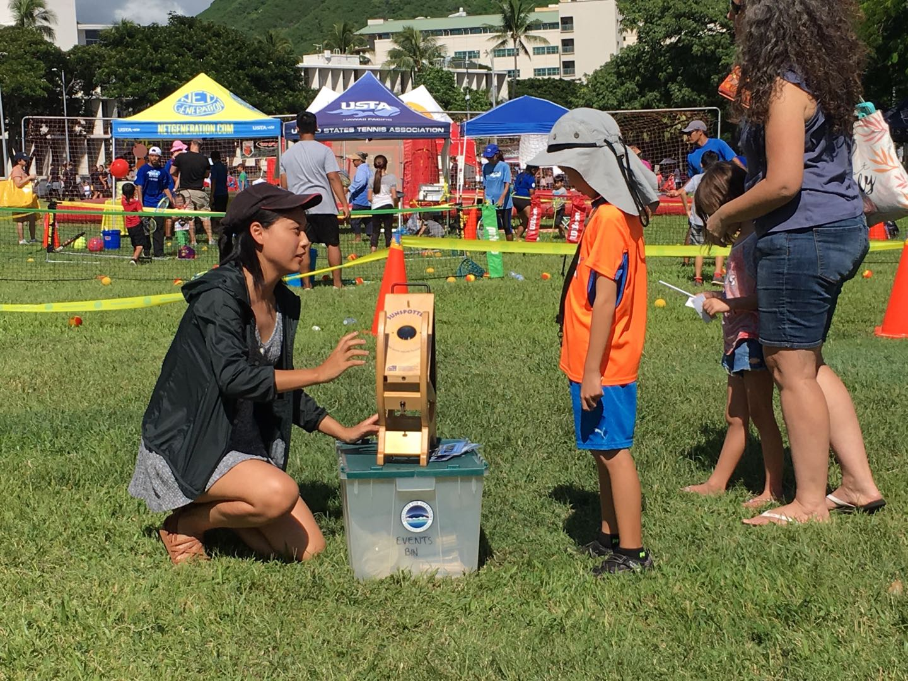
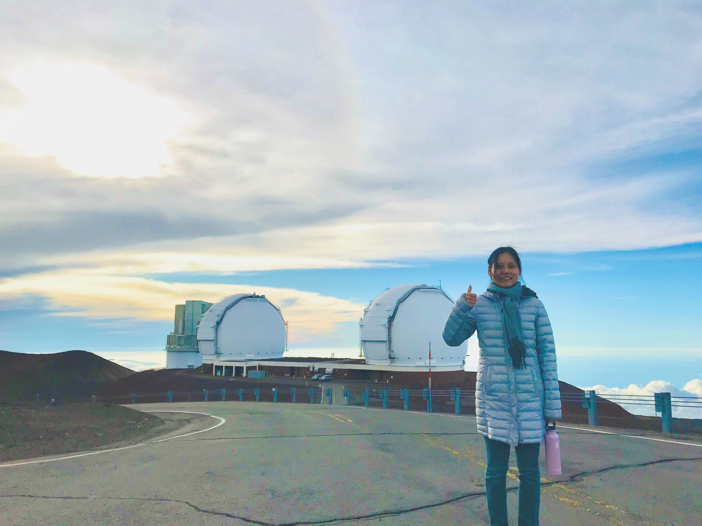
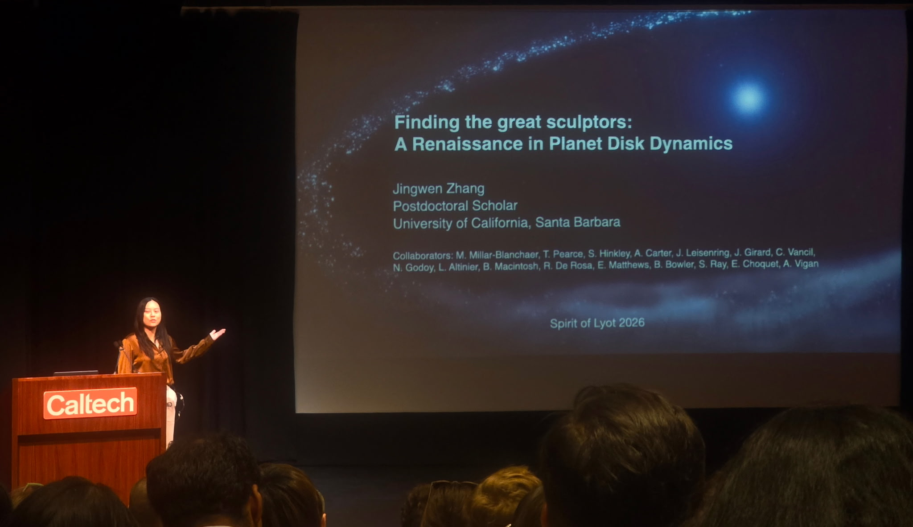
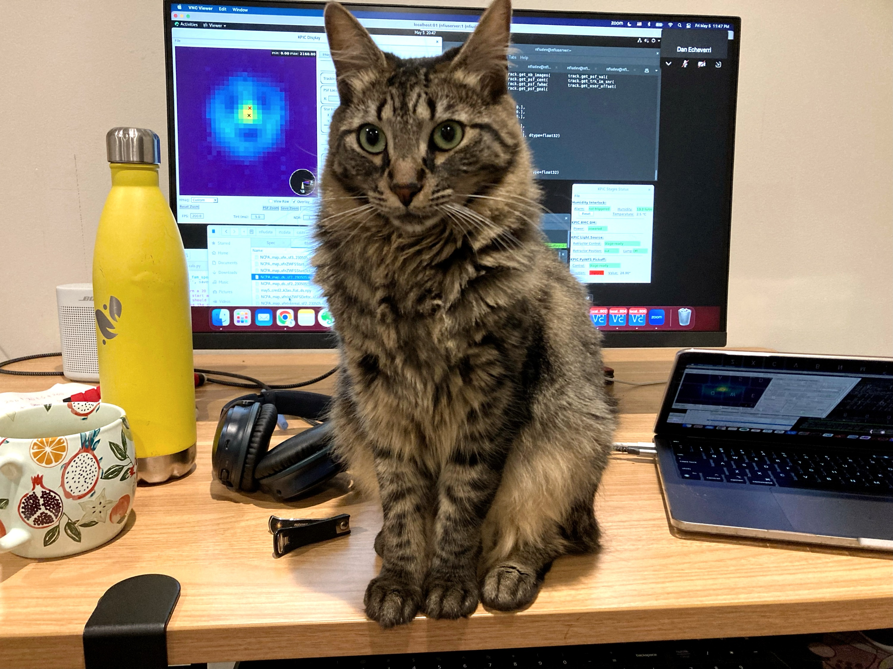
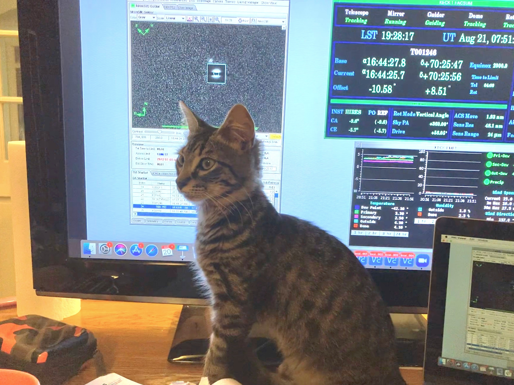
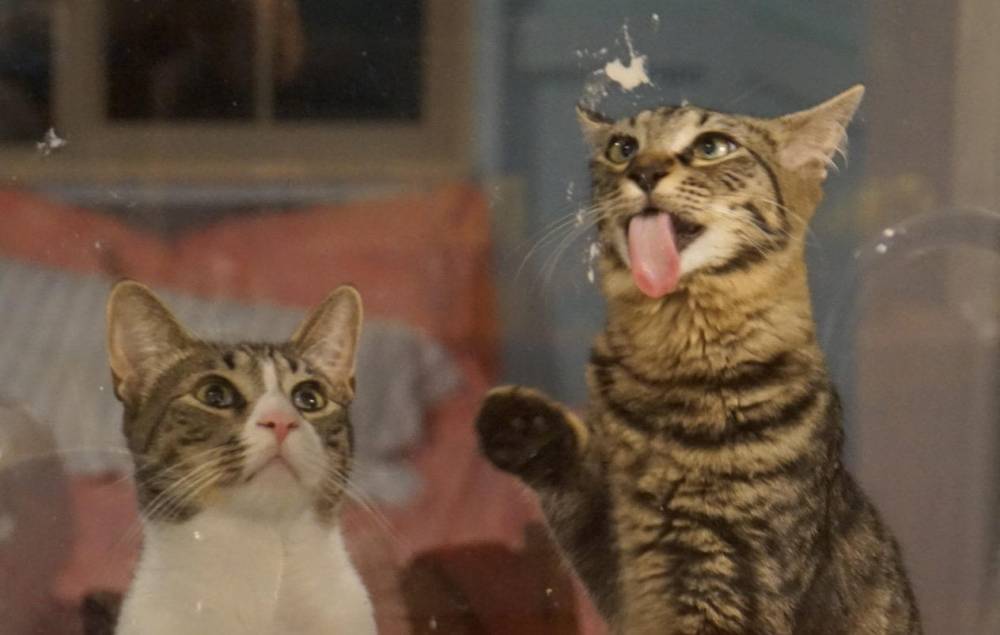
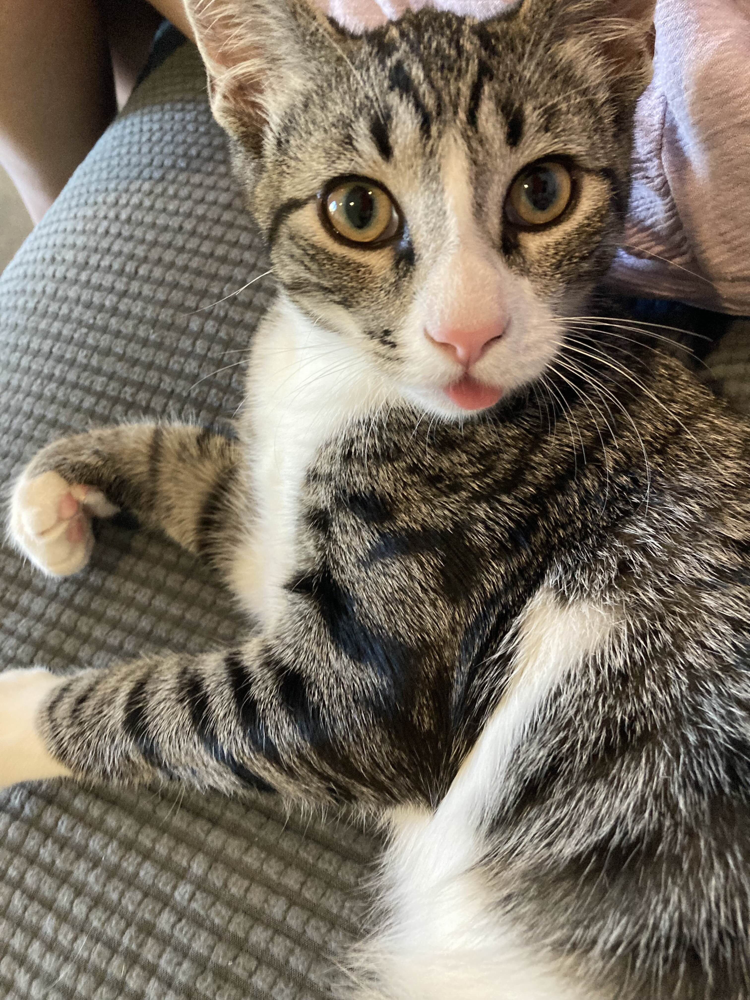
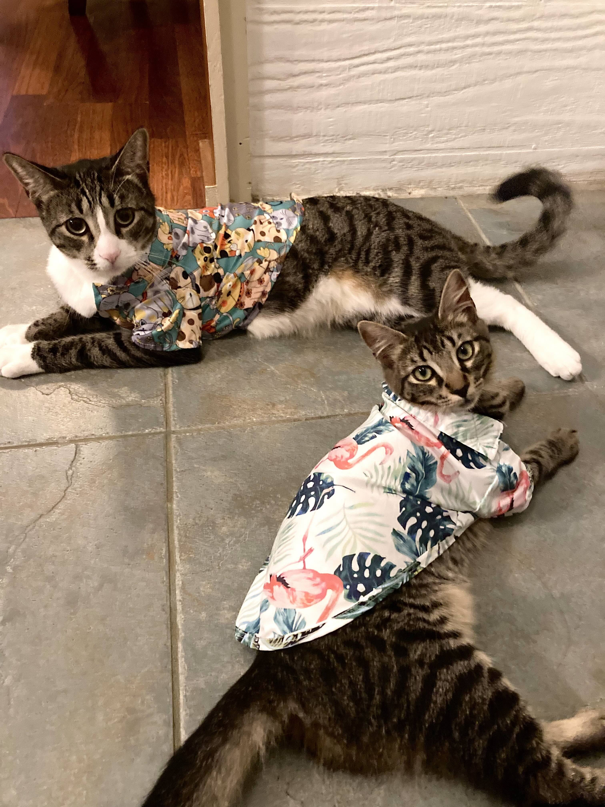
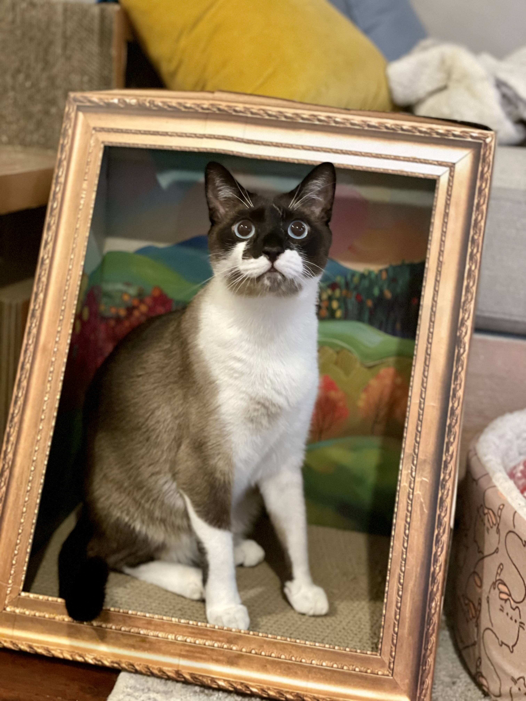
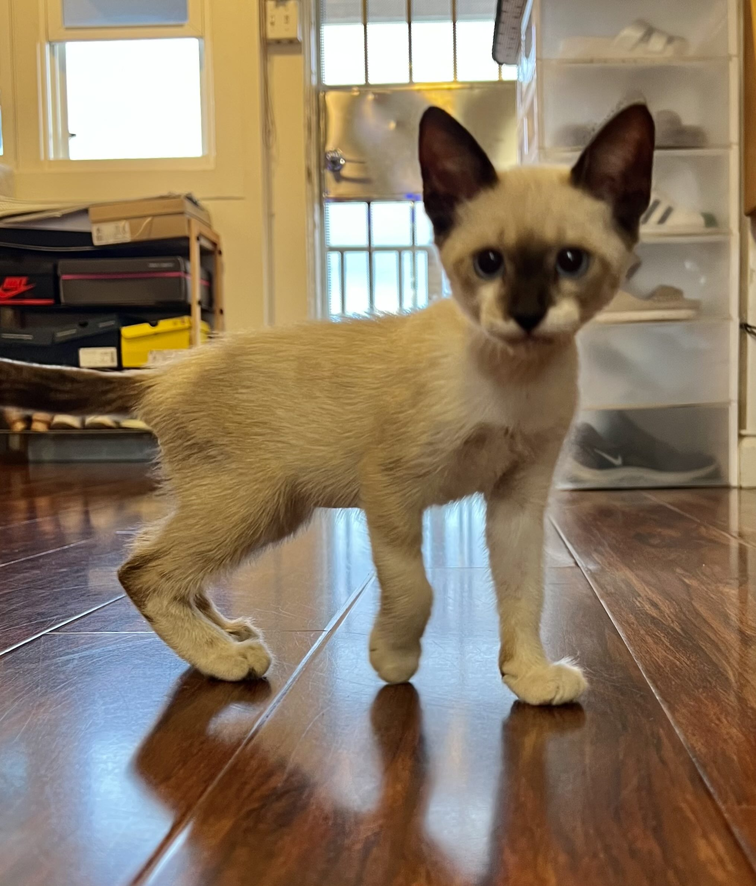

Research interests
- Planet formation and evolution
- Circumstellar disks and planetary architectures
- RV, astrometry and direct imaging
- Instrumentation for future space missions
- Earth-like worlds and habitability
I am an astronomer, educator, and cat mom. My research focuses on exoplanets and planetary systems, with the goal of understanding how planets form and how our own solar system fits into the broader context of the universe. Ultimately, I seek to answer one of humanity's oldest questions: Are there other worlds like Earth, and could any of them harbor life?
I once thought I had to choose between two childhood dreams: becoming a writer or becoming a physicist. Astronomy taught me that I did not have to choose completely.
Science, too, is a way of telling stories, stories written in starlight, in planetary orbits, in disks of dust around young stars, and in the small motions of stars tugged by unseen worlds.
That curiosity carried me into college as the first college student in my family, and later to a PhD in astronomy. Today, I study exoplanets, planets around other stars, and the architectures of the systems they belong to. I am interested in how planets form, how they move, and whether somewhere among them there may be worlds that echo our own.
Outside of research, I enjoy reading, hiking, snorkeling, skiing, and spending time with my cats. One of my favorite books is The Dispossessed by Ursula K. Le Guin, a science fiction novel that contrasts two very different civilizations on the planet Urras and its moon Anarres.



Theoretical studies have long predicted that misalignment between inner planets and outer companions can result in various outcomes, including high-eccentricity migration that produces hot Jupiters and secular perturbations that tilt, or even destabilize, the orbits of small inner planets. However, direct measurements of mutual inclination between inner planets and outer companions have rarely been made. The main bottleneck is that most giant planets at 1-10 AU were discovered using the radial velocity (RV) technique, which suffers from a degeneracy between planet mass and orbital inclination. A recent tool, Hipparcos-Gaia DR3 astrometric accelerations (Kervella et al. 2019; Brandt 2021), can break this degeneracy and characterize three-dimensional (3-D) orbits of companions when combined with RV or imaging data. During my PhD, I led a large observational campaign as PI to search for outer companions to transiting planets that exhibit significant astrometric accelerations from Hipparcos and Gaia DR3, using HIRES, NIRC2, and KPF at the W. M. Keck Observatory.


My survey led to the discovery of outer giant planets in three systems with transiting inner planets. In Kepler-129, I showed that the two sub-Neptunes are misaligned relative to the host star's spin axis by at least 38 degrees, likely due to perturbations from an inclined outer giant planet based on our N-body simulations. This is one of the rare systems in which stellar obliquity has been measured for small planets with radii below 4 Earth radii, providing direct evidence that a giant planet can dynamically reshape the orbits of inner small planets.
In HD 118203, I discovered an outer giant planet exterior to a close-in eccentric hot Jupiter. Our analysis show that the mutual inclination between HD 118203 b and c is below 10 degree. The alignment of the two planets provides a valuable test of hot-Jupiter migration scenarios and favors coplanar high-eccentricity migration over the traditional von Zeipel-Lidov-Kozai mechanism.
In HD 73344, I discovered a Jupiter analog exterior to a transiting sub-Neptune and a non-transiting Saturn-mass planet on a 66-day orbit. Our results strongly disfavor a coplanar architecture between the outer giant planet and the inner transiting planet. HD 73344 is only the second system, after pi Men, with a direct measurement of mutual inclination between inner small planets and an outer giant planet, and it may preserve evidence for either planet-planet scattering or formation within a misaligned protoplanetary disk.
Using Keck/NIRC2 adaptive-optics imaging together with RVs, Hipparcos-Gaia DR3 astrometric accelerations, and relative astrometry, I detected 20 stellar companions to transiting planet hosts and measured 3-D orbits for 12 of them. This survey doubled the number of systems with direct planet-companion mutual-inclination measurements and revealed, for the first time, a dichotomy in the orbital alignment of small planets in close binaries: alongside aligned systems, a distinct misaligned population emerges when stellar companions have periastron distances larger than about 40 AU. This result challenges the previous picture that transiting planets are generally aligned with their stellar companions.

Since starting my postdoc at UCSB, I have extended my work on system architectures to young planetary systems with debris disks. I am leading the analysis of a JWST/NIRCam survey of 13 debris-disk systems designed to search for planets that sculpt the observed disk structure.
Our first study presents the first scattered-light images of the CPD-72 2713 disk and reveals a misalignment between the stellar spin axis and the disk plane, while ruling out planets down to roughly 0.5 Mj at 1 arcsecond and beyond. This program is growing into a broader demographic study of debris-disk architectures and the giant planets that may shape them.
I am also involved in preparing for the next generation of exoplanet instruments. The Habitable Worlds Observatory aims to obtain reflected-light spectra from around 25 habitable planets, where detector noise becomes a central design challenge for baseline integral field spectrographs.
As the second project of my PhD, I studied imaging Fourier transform spectrographs as an alternative approach and developed radiometric models to simulate exo-Earth observations with both IFS and iFTS designs. This work showed that iFTS can be more efficient with state-of-the-art NIR detectors and helped clarify spectroscopy tradeoffs that directly inform future flagship mission planning.
Building on my HWO simulations, I now lead development of the end-to-end package CorgiSim for the Roman Coronagraph Instrument as part of the Coronagraph Community Participation Program at UCSB.
In this project, I contribute code, design package architecture, coordinate telecons, manage team efforts, and review updates from contributors across the collaboration. CorgiSim is being built to provide high-fidelity, format-compliant data for pre-launch calibration and pipeline testing, as well as a community tool for target planning and selection across imaging, polarimetry, and spectroscopy modes.
Hellow, they are Zodi, Bambam, and Pebble. My co-investigators, observatory assistants, and keyboard supervisors.








If you are interested in my work or want to collaborate, feel free to reach out.